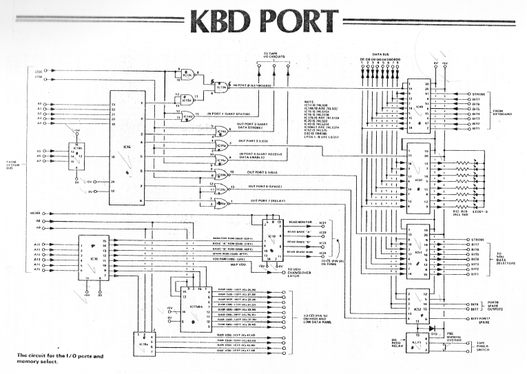
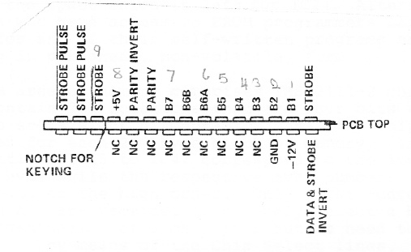
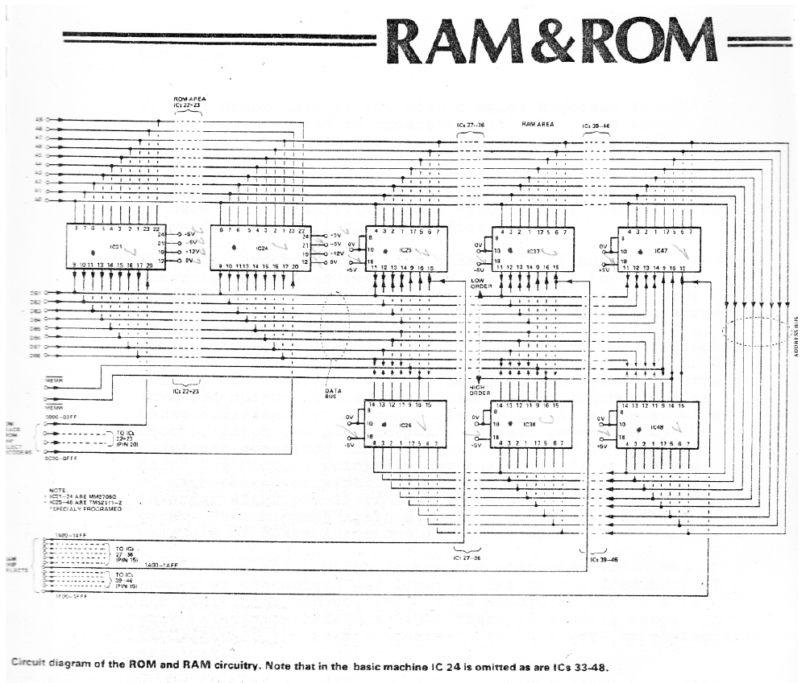
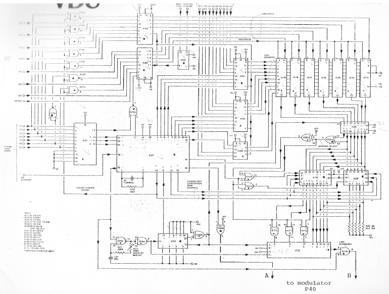
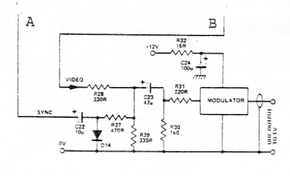

ETI, Transam and Mike Hughes, who designed the system, present the Triton - a one board computer that includes all the features expected in a machine providing the basis of a really powerful home system.

Personal computing to date has been beyond the budget of many, and beyond the capabilities of many more. The dual skills of being able to construct one's own hardware and being able to create one's own meaningful software programs has, until now, limited the use of personal computers in this country.
The development of the TRITON computer now means that anyone can own, construct and use his own personal computer, no matter in which direction his particular skills may lie.
The TRITON Manual is designed in such a way as to remove the cloak of mystery surrounding the various aspects of computing - hardware, firmware and software - by explaining every aspect of the overall system in great detail, giving worked and documented examples of programs, both in machine code and in Basic wherever possible, and a clear and concise description as to exactly what is happening and why.
The TRITON project was conceived from the obvious demand for a single-board computer that was easy for the enthusiast to construct and that actually was "a computer" as opposed to a microprocessor evaluation kit. It was to be capable of being programmed in a high-level language, Basic, as well as machine code, having a full keyboard, graphics capability, output to UK domestic TV set and tape recorder for visual display and storage, and to incorporate as many of the most recent advances in microcircuitry as possible to make it compact, portable and inexpensive.
In conjunction with Electronics Today International and ourselves, Mike Hughes, the designer of the project, has achieved this and more, the overall system being a very versatile and powerful computer with tremendous potential in homes, schools, colleges and industrial control and monitoring as well as business.
We hope that your interest in the TRITON will be well rewarded and that this Manual will help you and other enthusiasts to build, enjoy and learn more about personal computing, computers, how they work and how to use them.
TRANSAM COMPONENTS LTD
12 CHAPEL STREET
LONDON NW1
Tel 01-402 8137
1K MONITOR — 2 front panel interrupts allowing "Screen Clear/Cursor Reset" and reinitialisation without clearing memory. User machine code programming, memory check and modifications running of programs in machine code, listing, tape I/O for machine code or basic programs. Tape input with named file search facilities, clear and precise prompts and default statements — vectored jump to basic.
2K BASIC — provides the following commands and functions ABS IF NEW RETURN STEP FOR INPUT NEXT RND STOP GOSUB LET PRINT RUN TO GOTO LIST REM SIZE VDU ARITHMETIC AND LOGIC OPERATIONS (INTEGER ONLY) DIVIDE MULTIPLY SUBTRACT ADD GREATER THAN LESS THAN EQUAL TO NOT EQUAL TO GREATER THAN OR EQUAL TO LESS THAN OR EQUAL TO
A VERY VERSATILE POWERFUL COMPACT PERSONAL COMPUTER
Constructing a computer can be both challenging and educational. It certainly helps if you understand some of the terms and practicalities already but our aim has been to make TRITON a problem free and relatively easy to build computer.
Whether you are an electronics expert, a software specialist or a newcomer, you MUST know in general terms what the TRITON computer comprises otherwise you will not be able to get the best use from it when it is finally built. This manual is split up into different sections, each of which can be read independently and we suggest that you try the ones which sound most interesting first. You can then return to the constructional details.
The system itself is shown in Illustration A in block diagram form. For clarity, some of the single wire interconnections have been left out but nothing of significance has been omitted. The choice of this central processing unit was based on several major considerations.
It has a very easily understood instruction set which is remarkably versatile for working at machine code level. There is also a great variety of software freely available to use with it. Last but not least, it is one of the cheapest CPUs available today.
The 8080 sequences through a list of instructions held in memory in 8 bit bytes and on receipt of each instruction, will carry out an operation which ranges from getting another byte of data from somewhere else in memory to carrying out simple logical or arithmetical operations on that data. It is not within the scope of this Manual to cover the inner workings of the MPU itself or for that matter, to explain every operation that the 8080 can offer. You can learn these when you have built the instrument and a further reading list is included in the reference section at the end of the Manual.
As it operates sequentially, the CPU needs a clock. In this case the master frequency is 7.20 MHz which is divided down to clock the CPU every 1.25 uS. This time is the duration of a microcycle and it takes from 4 to 11 microcycles for the CPU to complete an instruction.
The CPU has quite a large number of lines leading to it. The most significant are those carrying data to and from it. These number eight and are in the form of a bi-directional busbar (ie. can carry data to or from the CPU). To cut down on the number of wires coming from the CPU the data busbar serves a secondary purpose. It carries what is called 'STATUS' information at a certain point in time within an instruction cycle.

This Status information is in the form of an 8 bit byte, decoded by a device called a System Controller. When decoded, the Status byte feeds one of 5 lines with a logical '0' which tells the whole of the computer what sort of instruction the CPU is executing during that cycle. These lines are designated INTA (meaning that the computer has just been interrupted by an external 'Interrupt Request'), MEMR (reading data from a memory location), MEMW (writing - or storing - data into an internal memory location), I/OR (reading data from an external source - such as a keyboard or a tape system) and I/OW (writing or outputting data to an external destination such as a VDU or a tape system). The computer can only do one thing at a time so only one status line on the control bus will be active with '0' at any point in time.
Of equal importance to the data bus are the 16 lines which carry a 2 byte WORD which is used to ADDRESS a specific byte of memory. These form the uni-directional ADDRESS BUSBAR. Using 16 binary lines, one can therefore address up to 65,536 (decimal) memory locations. This figure is used to describe the maximum capacity of a complete system and is abbreviated as '64k'. A machine having this maximum memory capacity would be too large for domestic applications but it might be necessary to go to this extent for business or scientific purposes.
For this reason we have limited the capacity of our single-board computer to 8k of memory but the address busbar (in common with the data and control buses) are buffered and can be fed to the outside world through a multiway connector, thus allowing easy expansion to maximum capacity with add on boards.
The address bus also serves a multiplicity of roles, depending on whether the instruction cycle is a memory addressing or an I/O addressing cycle. As already stated, all sixteen lines are used to address memory locations, but during an I/O read or write cycle the CPU is limited to providing address data on the eight least significant address lines. These eight lines are decoded at the correct point in time to activate any one of 256 possible external devices through what are called PORTS.
It should now be clear that the address bus works in conjunction with the status lines of the control bus to let all the memory locations and I/O ports know what is going on.
Before moving on from the heart of the system, it is worth mentioning some of the single lines depicted on the illustration. When the computer is initially switched on, it is necessary to give it the right instruction to start with so that it can sequence on from there to complete the program in a sane manner. For this reason it is usual to have the first instruction at address location zero. This is logical and it is easy to make sure that the CPU looks at this location first by resetting the program counter to 0000H (this means zero written as a four digit hexadecimal number). We can reset the program counter of the CPU by depressing a push button or as built into this machine, POWER ON RESET.
The line marked HOLD may be used for very special applications involving DMA (Direct Memory Access). Basically, this means that by making this line go to logic '1' it is possible to isolate the internal CPU from all three busbars (using the tristate facility of the buffers) and allow an external device to do what it will with the internal memory. We have strapped this line to '0' with a removable link so the facility is there if required. RDYIN is used if any memory or peripheral is incapable of responding as fast as the computer desires. The external device can make this line go to '0' for any period of time (usually set by a monostable) and when this happens the computer goes into a WAIT state and simply stops operating as long as this line is low. When the RDYIN signal is removed, it carries on as if nothing had happened.
The signal WAIT is issued during this time and the WAIT line can be seen designated as one of the unbuffered outputs. The RDYIN line provides a very useful option for those who do not wish to use it for its primary purpose. By connecting it via a push button switch to ground, the computer can be halted in the middle of any operation. This is particularly useful for stopping a BASIC LIST operation for cursory inspection. Facility for bringing this out to a push button is not made on the board but it is a simple matter to pick up the right point on the top side and take it via a single wire to the front panel - see the circuit diagram in this section.
The RESET output goes high mementarily when the reset button is pressed and can be used to carry out a synchronous reset on external equipment. The HDLA output indicates that the computer has gone into a HOLD (or DMA) state - if anyone takes the HOLD line high. The INTE line (Interrupt Enabled) indicates that the computer may be interrupted and the DBIN line indicates which way the computer expects data to be flowing on the bi-directional data bus. It goes high when CPU is expecting data to flow INTO it.
We are using the STSTRB (STATUS STROBE) signal for a very special purpose - to synchronise the memory mapping of the VDU - more is said about this in the relevant section.
As already inplied, the 8080 will allow itself to be interrupted in mid program provided that the program sets the Interrupt Enable flag. This provides the possibility of breaking into a program that is running to do something totally different. There is facility for 8 possible interrupts but only 7 can really be used on this machine (Interrupt 0 is redundant as it duplicates RESET).
An interrupt is entered into the machine on a single interrupt request line. Of the seven usable lines we are using, two within the machine to do a clearing operation on the VDU screen and to do a re-initialisation without clearing all the memory (which would otherwise happen if the reset button was pressed). There are five remaining lines, one of which is brought out to a spare push button on the front panel and the rest piped down the multiway socket along with the busbars. The interrupt request lines have to be encoded and formatted into an 8 bit date byte. When this is done the interrupt encoder tells the CPU with the INT signal that an interrupt has been received. When the CPU is ready to be interrupted, it issues an 'Interrupt Acknowledge signal INTA which is used to place the encoded byte onto the data bus. This byte enters the CPU and directs the computer to operate the desired subroutine. At the end of the routine the computer reverts to the main program continuing at the point at which it was interrupted.
The memory of TRITON is split into three types on the main board. There are locations for up to 4k of Read Only Memory (ROM) which is split between four 2708 Erasable ROMs. These occupy address locations 0000H to 0FFFH. The standard TRITON uses the first 1k to hold Monitor and Utility routines necessary to initialise the machine and re-vector interrupts. The next 2k holds a BASIC INTERPRETER and the fourth 1k block is left spare for future expansion or user designation.
There is 1k of Random Access Memory dedicated to the VDU. This starts immediately above the ROM area starting at 1000H. Normally this RAM is addressed in synchronism with the VDU line scan by the VDU control circuitry but the CPU can take over addressing under program control (in effect interrupting the VDU). This way the VDU can be built into the memory architecture of the main computer allowing quite spectacular animated visual displays. The VDU RAM can be written into only by the computer.
The rest of the memory is made up of RAM which is both read and write. This area is used to hold the stacks and tables of the MONITOR and BASIC INTERPRETER (512 bytes) and the main work area starts at 1600H for a further 2½k ending at 1FFFH. This represents the full capacity of the on board memory. There is no reason however, why further read write memory should not be added externally starting from location 2000H.
The ROM and VDU RAM areas are blocked into units of 1k - to fall into line with the types of integrated circuits used. However the stack and work area RAMs are laid out in blocks of 256 bytes. The reason for the smaller blocks for the latter is to allow the user to choose to what extent he wishes to build up the on board memory. Those on a limited budget can extend the memory in fairly gentle stages, although to achieve any realistic use from the Basic Interpreter, it is essential to have at least five of these blocks.
The high order bits of the address busbar are used to decode which block is being addressed - this is done by the Chip Select decoder. Four lines can be seen going from this to the ROMs, the single line to the VDU 'Memory Mapping Changeover' logic and the remaining twelve lines to the Read Write blocks. Note that the ROM chip selects are gated with the MEMR signal from the Control Bus whereas this control signal and MEMW go straight to the RAM chips. This is because the 2111 Random Access Memory ICs used have internal chip select gating and output enables.
With the exception of the VDU which is 'hybrid' the rest of the system is made up from a variety of I/O stages. The most important of the latter is the Keyboard Input. The keyboard data and strobe lines are fed onto the data busbar via tri-state buffers which form the keyboard input port. Only when the computer's software addresses this port (by decoding the least significant 8 bits of the address bus) through the Port Select logic and issues a I/OR control signal will data from the keyboard be placed on the data busbar. Working in the opposite direction, the Output Port driving a bank of eight on board LEDs is a set of eight latches which catch and hold whatever data is on the busbar when they receive a coincident pair of signals from the port selector and the I/OW line of the control bus. These onboard LEDs do help to make the TRITON system more versatile and can be used for test purposes or in specialised development applications. The LEDs themselves could be discarded and the eight lines made available as a spare general purpose output port.
By making use of two redundant latches on the board it was possible to provide two spare output lines on one port and a spare line on the port which also feeds the tape recorder power control relay.
The UART (Universal Asynchronous Receiver/Transmitter) is the device which converts the 8 bit wide parallel data on the busbar to a specially formatted serial stream to feed the tape recorder modulator. It also carries out the complementary function of converting a received serial stream into parallel data bytes. The device operates as if it were two input ports and one output port. One of each sort of port would be obvious for a device which receives and transmits but the requirement for a second input port may not be so obvious. Because the device operates asynchronously from the main computer (it has its own clock operating a 300 baud) it is necessary to make the computer wait from time to time to allow the slower operating UART to complete a transmission cycle. This is indicated by the UART activating a flag which is regularly monitored by the second input port.
The VDU portion of the computer is based on the Thomson-CSF Control chip and operates in a unique manner for this integrated circuit. Not only is it possible to output to the VDU through an output port (in a similar manner to using a teletype) but the computer may also be used to inject data directly in the VDU's memory at extremely high speeds. This is most dramatically illustrated by programs written in low level Assembler when a character can be placed onto the screen in under 30 microseconds. A complete screen full of characters will appear as if the characters had all been outputted simultaneously. When used in conjunction with the special VDU function of the Basic interpreter the speed is greatly reduced but in many instances is faster than the I/O mode with the advantage that characters can be placed anywhere on the screen without having to manipulate the cursor.
A further extension is the way the control chip is used to handle Graphics. Instead of the usual 6 bit wide RAM, 7 bits are used in this VDU application to enable the use of the complete set of ASCII codes. 64 extra character codes are therefore available by using those normally associated with lower case 'alpha' characters and all the control codes. Within the overall context of the computer, some of the control codes serve dual purposes and care has been taken in programming the VDU control ROM to inhibit printing a graphic when a control code is used for genuine control purposes.
The graphic select logic looks at the two most significant bits of the ASCII code and via an EXCLUSIVE OR function determines whether or not the symbol is graphic or alpha-numeric and then proceeds to select the standard alpha-numeric ROM or the specially programmed graphics ROM. There is a great deal of extra logic associates with this operation as well as the Memory Map/IO changeover which is dealt with in the section describing the circuit in detail.
For simplicity and reliability, the TRITON uses an ASTEC UHF modulator as a pre-assembled module. This operates on channel 36 with British modulation standards. For the benefit of those overseas we should mention that the television line and field standards used in this VDU are 50 Hz field rate with random interlace and 312½ lines per field (ie. 625 lines per randomly interlaced frame). The line and field rates are set by the crystal-controlled Thomson-CSF chip.
As the TRITON has been specially designed to work on a single printed circuit board, its construction is relatively easy.
Firstly, it is essential to use a top quality double-sided plated through board for the project. This, together with the complete kit of approved parts for the computer, is supplied exclusively by Transam Components Ltd (who retain full copyright). Unlike many other types of project, the PCB is likely to be the most expensive single item you have to invest in, but it is this component which brings the whole project into scope for the average constructor with no significant theoretical knowledge. You should notice the high quality surface of this board, due to the through hole plating process. Avoid finger contact and certainly keep it free from grease.
There are a large number of plated through holes, (approx. 2,500) and some of these are located beneath components. It would be wise to check the integrity of the through hole plating BEFORE any construction is started. It will probably be sufficient to check point to point with a continuity meter that the power address and data busbars are continuous throughout the board. This can be done by referring to the pin numbers of ICs on the schematic drawings and then picking these up on the topside illustration. An hour or two spent on this exercise is an invaluable insurance that the board has not been damaged in transit. Ideally, you should check the busbar integrity on the UNDERSIDE of the board as it is this side that you will be soldering.
The board has been designed to keep all the most intricate wiring on the top side - in particular the connections that run between IC pins. These are the most vulnerable to a heavy hand on the soldering iron, but this is not to say that any carelessness can be afforded underneath. Use the smallest soldering iron you have available - the bit must certainly be no greater than 3/32" diameter. As stated, ALL soldering operations should be carried out on the underside of the board - the through hole plating will route all necessary connections to the topside.

Wherever possible, try to reinforce the through hole plating by allowing molten solder to creep through the hole by capilliary action. To do this, hold the soldering iron in place long enough for the heat to flow through the hole and take the solder with it. A couple of seconds longer then your usual soldering time should suffice. You will notice that on the underside of the board there are hundreds of IC pin lands that do not appear to be connected to anything. These lands must be soldered in ALL positions because nearly all of them go somewhere on the top side.
Take your time with the soldering - even at a slow pace you can complete this project in a couple of evenings - because it is very easy to miss a connection or produce a dry joint. We recommend that you insert one component at a time and solder it in completely before moving on to the next - a visual check of each joint is essential and if you have any doubt, check with a magnifying glass. A few seconds taken up doing this can save hours trying to find a single missed connection. Insert IC sockets in descending order of size - ie. 40 pin, then 28 pin, etc, by which way you will avoid soldering the wrong socket in the wrong hole.
All the holes on the board have been pre-drilled to the correct diameters, but in the event of your having a device which will not quite go through the hole, do NOT under any circumstances attempt to drill out to size - you will ruin the through hole plating. The ONLY holes you are permitted to drill out are the fixing holes for the board and the mounting holes for the extender socket. If you have a stubborn component, for example the modulator, try scraping down the diameter of its lead with a sharp knife or use a needle file to reduce its dimensions slightly.
You MUST use sockets for all the integrated circuits as it is virtually impossible to remove ICs from a double-sided THP board. Transam Components Ltd will not replace components or be able to test your kit if the above instructions are not followed. You should, however, find that all the specified components slide into place with no trouble whatsoever.
Start construction by soldering in all the DIL sockets while the board is flat - it makes life much easier - and then insert all resistors and diodes. In many cases you will find that topside connections run underneath resistors so you should take care to see that there is no possibility of the bare resistor wire shorting onto these tracks. Where you feel this to be a hazard, use a piece of sleeving over the wire.
Next, insert the nine board pins which connect to the transformer and IC1 (the off-board voltage regulator). If these protrude underneath the board by more than 1/16" crop them off short to avoid them shorting to the cabinet when the final board is mounted in its case. Proceed to solder in the in line strip sockets and the extender socket. When the latter is firmly soldered, CAREFULLY drill out the board mounting holes with a drill, using the connector's holes as a guide, and then bolt it firmly into place.
Insert the three transistors for the tape I/O. These have self-locking lugs on their legs and some careful manoeuvring is required to get them through the board. Move on to the capacitors and LEDs.
Leave the three large smoothing capacitors until last and take care to insert the LEDs the right way round - you will have to look very carefully at the solid tantalum capacitors to find their polarity. Then insert and solder in the three pre-set potentiometers.
Before progressing further, check the polarity of all the diodes and electrolytic capacitors you have inserted. It is often difficult to see the marking on 1N4148 devices so if in any doubt, use a test meter on them. Also make absolutely sure that you have put the zener diode in its correct position.
You can now insert and solder in the three crystals, making sure you have them correctly positioned. The crystals have their frequencies stamped on them (usually in kilohertz). Ideally, it is preferable to use sockets for the crystals, but as space is at a premium on the board, do be careful not to overheat them. This is the only instance where you are advised to use the minimum amount of time with the soldering iron and not to worry about capillary action.
Continue with construction by putting in the modulator and the two onboard regulators. Make sure you have the right regulator in the right position. One is for positive regulation, the other for negative and you can check their type numbers against the parts list and their designations on the board. Also ensure that you insert them the right way round - the metal fin should be on the face of them furthest away from the main smoothing capacitors.
Temporarily mount IC1 on its heatsink and run flying leads to the three pins allocated to it. Be very careful that you observe the correct sense of its two pins which are offset from the lateral centre line of the package. Hold your device against the layout drawing and turn it so that the pins are nearer the top than the bottom and you will then have the same sense as the drawing.
Before inserting any integrated circuits, give the power supply a dry run. Connect up the remaining six board pins to their corresponding terminals of the transformer and apply power. Use a voltmeter to ensure that you have the correct voltage rails present. You should get +5V and +12V at the output pins of ICs 1 and 2 respectively, and -12V at the output of IC3. You should read -5V at the junction between R1 and the zener diode. If all is well here, systematically check that you have the correct voltages at the sockets of EVERY integrated circuit. Use the schematic diagrams to help you identify the pin numbers. Finally, check that you have inserted the single wire link to the right of the extender socket.
Insert all the integrated circuits making ABSOLUTELY SURE that you have them orientated correctly and that they are in the correct locations. Again use a magnifying glass to read their type numbers as some of them look similar at a quick glance. Use the dot on the UART to locate pin 1 as the notch can be misleading. Note that the orientation of ICs varies a lot on the board and you must check each one individually. Insert the 2708 EROM chip that is marked MONITOR V4.1 into the socket for IC21, the one marked BASIC L4.1 'A' into the socket for IC22 and BASIC L4.1 'B' into IC23. The standard kit includes eight TMS 2111-2 devices (some may have different manufacturer's marks owing to availability from the standard suppliers). These should be inserted into IC locations 25 to 32 inclusive. The only gaps you should have on the board are for IC24 and ICs 33 to 48.
Do not install the keyboard at the moment but simply make up a coaxial lead linking the modulator to the aerial socket of a standard 625 line television set. Switch on the TV and allow it time to warm up, check that a rastor is just visible and tune it to approximately channel 36.
Set the three onboard potentiometers to their midway positions and apply power to the computer. You should see some change on the television screen even though you may not be spot on tune. Try adjusting the tuning over the whole range until a strong signal is locked in. You should now see the welcome message:
TRITON READY FUNCTION? P G I O L W T
Once you can read this signal, you can rest assured that your computer is working. Switch the computer off, wait a few seconds and switch it on again. For a fraction of second you will see some garble on the screen which will rapidly clear and the previous message will be repeated.
If you do not get this reaction you have made a mistake somewhere down the line which is almost certainly going to be one of the following:
The last two possibilities are most unlikely - particularly the latter, if you carried out the recommended tests. Faulty components are a possibility if you use any from a doubtful source or if you try to use standard TTL instead of the low power devices specified. Avoid this problem altogether by buying best quality devices exactly as specified - they are much cheaper in the long run. If you purchased your components from Transam Components Ltd and can verify that you have checked all the other possibilities of failure, you should immediately contact Transam who will be operating a 'get it going' service for all customers. This will not apply to boards which are returned with careless soldering, soldered-in ICs or non-specified components used as substitutes.
We guarantee that the circuit board is correct and that the design works. Both the board and the resident firmware have been tried and tested over several months and, apart from soldering mistakes on the part of the constructor, no other faults were experienced during the period.
Presuming that all has gone well, you now have a nearly finished computer. Switch off and make up an umbilical cord of wires to go from the keyboard socket on the board to the keyboard and associated push switches. Use colour-coded wire and ensure that you make no mistake when connecting the relevant leads to the keyboard Cinch connector. It is double-sided and you must make sure to hold it with the correct orientation or you may have disastrous consequences with the power lines. Different types of keyboards have different connections - our drawing refers to the George Risk Model 756. We refer you also to the connection details supplied with the keyboard. The only comment we should make is that the specified keyboard, and some others, give you an option for bit 6 of the data. One option gives upper case characters (capitals) only, while the other gives both upper and lower case. This application needs the latter. The strobe is the static strobe which goes to '1' as long as a key is depressed.
The specified keyboard does not have any built-in direct function keys so these have to be provided by separate push buttons. These must be mounted on the front panel and are used to provide RESET, INT1 (Clear Screen), INT2 (Reset without clearing memory), and TAPE MANUAL OVERRIDE - ganged with PAUSE (see descriptions elsewhere). The first three push switches all have a common ground and are 'push to make' with a spring return. Use the Common lead and the respective signal leads to go to each of these switches. The fourth switch must be double pole 'push to make - push to break'. One pair of contacts should take the special 'PAUSE' line to ground when it is on. This line does not exist in the umbilical cord coming from the board socket but must be soldered to the end of R3 going to pin 3 of IC4. The other pair of contacts is connected across the tape power control pins of the respective DIN socket.
You can make up all the above on flying leads to test the unit fully before putting it into its cabinet. Power up again and get the initialisation message. Try pressing any key on the keyboard EXCEPT P G I O L W or T and the computer should respond by saying INVALID. Press CONTROL C and the screen should clear and re-initialise. Press RESET. When the button is released the same should happen. Try INT2 and the machine should, again, re-initialise. When you try INT1 the screen should clear without the message appearing. To get something back on the screen, press any keyboard key except those in the 'key character' message (P G I O L W T). You should once more get INVALID. Depress CONTROL C once more and your computer is re-initialised and ready for test.
We are assuming at this stage that you do not know anything about programming, so simply follow the instructions and check that you get what is described.
Depress P on the keyboard (there is no need to press shift because the Monitor program automatically gives you upper case). You will get:
P PROG START=
(The computer is asking you to tell it the address of the part of memory you wish to inspect).
Type in 0000 followed by carriage return. The display will now show:
P PROG START= 0000 0000 31
(31 is the data in location 0000)
Depress the carriage return repeatedly and you will get the following as you step through the Monitor program instructions:
P PROG START= 0000 0000 31 0001 80 0002 14 0003 FB etc...
Re-initialise with CONTROL C and then type L. The computer will again ask you for a start address but this time will list out the contents of 15 adjacent locations starting from that address. We can use this to test that the memory is there and working in the RAM area.
Answer the computer with the address 1600 and a carriage return. If you make a mistake before you press CR you can backspace with CONTROL H and change an entry, but you must then type through the rest of the line on the screen. The computer will list the contents against the memory addresses and then stop and ask for 'MORE?'. If all is well you should see 00 in all locations. To continue, type Y and keep doing this, checking all the locations up to the highest order RAM on the board. Above that address the computer will read FF which indicates that there is no memory there. If you see any data above address 15FF (that is, anything other than 00 or FF) you can be sure you have a bad connection to the RAM IC which contains the data in question. This test only holds true immediately after first initialisation and cannot be used if you have attempted to write programs.
To get out of LIST, type any character other than Y and the computer will re-initialise. Carry out this or any of the other reset procedures already described and procede to check the G function. This is to facilitate running a machine code program. The computer will acknowledge:
G RUN PROG START=
This means it is ready to run but wants you to tell it from where in memory it should get its first instruction. Give it this information by typing 02B9 followed by CR. You will actually be running a re-initialisation program in the Monitor which should just acknowledge with:
FUNCTION? P G I O L W T
You are now back where you started so you can try typing W which turns the computer into nothing more than a video display typewriter. You can type away to your heart's content testing out all the alpha-numeric and graphics characters, using the keys in unshifted, shifted and control mode. Do this while inspecting the coding tables shown in the section describing the VDU and get used to the cursor move commands. Type a full line of characters and adjust VR1 for best line length. To get out of this mode of operation use CONTROL C or any of the other methods of resetting. It will be fun for you to see BASIC L4.1 in action so depress T. The computer acknowledges with:
T BASIC L4.1 OK
Type in NEW followed by CR to ensure the memory is cleared and the computer re-acknowledges with the BASIC header.
Very carefully type in the following message line by line with a CR at the end of each line. Remember you can correct by backspacing with CONTROL H before you hit CR.
10 FOR A=1 TO 10 20 PRINT 'YOU ARE MY MASTER' 30 NEXT A RUN
You should not re-type the 'greater than' prompt signs - the computer is prompting YOU with these. When you press CR after typing RUN we hope you will be surprised - you have just written your first program.
You can now be confident that your computer is working correctly and it only remains to test and adjust the Tape I/O circuits. This must be done in stages.
First check the Tape Output software. Connect an audio monitor (simple amplifier or crystal earpiece) between the 'Tape Out' socket on the board and ground. You should hear a continuous tone. Call up BASIC by typing T and enter the above program again. Once you have done this, get back to the Monitor without erasing your BASIC program (use CONTROL C). Now press O to call up the Tape Output routine.
The computer will ask you for a TAPE HEADER which can be anything you like written in alpha-numerics. Preferably do not use a title longer than 20 characters as you might run out of input buffer space. We suggest you type in SLAVE ROUTINE. Follow this with CR while listening to the tone on the ear piece. Nothing will happen on the VDU but after a pause of between 5 and 6 seconds (this could be longer if you are using a master clock crystal lower than the 7.20 MHz as specified) you will hear about 1 second of regular high speed pulses followed by a few seconds of what can best be described as 'burble' (this is your program going out). The burble will stop and you will hear just the continuous tone you heard at the beginning. After a further 5 or 6 seconds, the VDU will confirm that the file has finished by displaying END followed by the re-initialisation heading.
Repeat this exercise but this time connect a continuity meter across the tape power control sockets on the board. The manual override switch must be open circuit. While you type in the tape header code the meter should show that the relay is open circuit, but as soon as you depress the CR to start the operation, the relay closes and stays closed until the VDU types END. It is obvious that the 5 or 6 second delay at each end of the routine is to allow a portion of blank tape to go by to reduce the chance of overlapping files or missing the start of the active tape at the beginning of a new cassette.
You must now set the Baud rate for your system. The simplest way is to use a frequency meter connected to pin 3 of IC81. Adjust VR2 until the meter reads exactly 4,800 Hz. A better way, and probably more viable for most constructors, is to use a standard test tape. This is available from Transam. It is better because different tape recorders might operate at different speeds which would influence the play-back baud rate of your system. This does not matter if you are only recording and playing back your own programs, but if you wish to use those from other sources, your OVERALL SYSTEM must operate at 300 baud. Using a standard test tape calibrates your overall system to 300 baud.
To carry out this test properly, you must have a master clock crystal having a frequency greater than 4.5 MHz, otherwise the VDU may not print out as fast as the data is coming in from the tape. You must also enter and run a special machine code program to facilitate the test. (How the program operates is explained in the section on the Monitor). The machine code program accepts any data on the tape and displays it, verbatim, on the VDU. If garble is received and decoded, garble will be printed. The test tape contains the alphabet followed by CR and Line Feed repeated many times over a period of a few minutes. All you have to do when the program is running, is set VR3 to its midway position and adjust VR2 until vou get the alphabet reliably repeated on the screen. If, at the best setting of VR2, you still get occasional garble, try altering VR3 for sensitivity. You should of course, be using the phono output from your tape recorder, but if you do not have this, use the extension speaker socket with the volume set about 20% up from minimum.
Now carry out the following instructions EXACTLY.
Initialise the computer with RESET, type in P and enter the start address for the program as 1600. For zero always use 0 and not O. Press CR and location 1600 will be shown to contain 20. Now use the memory change facility to start writing your program. Simply type in the following list of hexadecimal instructions - each pair of digits should be followed by CR. You will end up with a column showing address locations to the right of which is a column showing what WAS in that location (it should have been 00 in all cases) and to the right of that the new data you have just typed in. When you have typed in the complete list of instructions, use CONTROL C to re-initialise, then type L, and list from location 1600 (as previously described). Check that the codes in each location correspond EXACTLY with those in the published program. Use CONTROL C to re-initialise and then type G. Enter 1600 without pressing CR at this stage. Make sure your tape recorder is properly connected to the board and switch on the recorder in PLAY mode.
Press CR and procede to adjust VR2 as previously described. You should see:
ABCDEFGHIJKLMNOPQRSTUVWXYZ ABCDEFGHIJKLMNOPQRSTUVWXYZ ABCDEFGHIJKLMNOP etc..
until the recording ends or you switch off the tape recorder. While this is happening your computer is locked within a program loop and you will NOT be able to get out of this with CONTROL C. You will have to use INT2 to re-initialise.
Here is the program you must type in:
1600 CD 1601 27 1602 03 1603 CD 1604 1D 1605 03 1606 CD 1607 13 1608 00 1609 C3 160A 03 160B 16
Your TRITON is now completely set up and ready for use. You have made an extremely powerful computer whose applications are limited only by your own imagination and the development of more sophisticated software - coupled with extender boards to give you extra I/O functions (Floppy Disks, Line Printers, extra Tape Recorders, more Memory, etc). We have plans for further exciting applications and developments. Please contact us or watch our advertisements in the national magazines.
We strongly recommend that you solder in all the sockets where there are spare locations on the board. This will make life much easier for you if ever you wish to increase the on board memory. When you have done this and have completed all the recommended tests you should procede to assemble the printed circuit board into the cabinet.
To make life easy we have arranged for the cabinet to be pre-drilled with all the major holes but you will have to drill out the fixing holes on the printed circuit board to suit the screw diameter. Carry out this operation extremely carefully, making sure that no swarf falls across any of the printed wiring. You should also take steps to avoid flexing the board while drilling - this is best accomplished by placing the whole board flat on an old wooden board using a hand drill from the top side. Make your holes slightly oversize to allow a little tolerance for fitting so that the board will not be under strain when the screws are tightened.
Use long screws inserted from the underside of the cabinet and fix these securely in place with nuts so that they will act as fixing columns. Run a spare nut on to each screw so that it stops about ¼" from the inside bottom of the cabinet - these will act as stand off spacers. You can then offer up the board to these pillars to check the fit but do not bolt it into place as yet. Remove the board and stick a sheet of self adhesive plastic film over the inside base of the cabinet where the pcb will be mounted. This will act as an insulator in the event of any untrimmed leads protruding too far beneath the board.
Use four small screws to mount the keyboard pcb to the sunken support bracket making sure that you sandwich a sheet of insulating board between it and the metal work (needless to say - you should remove the conductive foam pad from under the keyboard's integrated circuit). Do not mount the keyboard assembly into the cabinet at this stage.
Mount all the back panel components - DIN sockets, one and two, fuse holder and mains cable grommet and bolt the mains transformer into place. Make sure you place a solder tag under one of the fixing nuts for the transformer for an earth lead. Make up the bank of four push buttons for the front panel and screw into place. Three buttons should be push to make with a spring return and the fourth should be push to make/push to break. The first three are used for RESET, Interrupt 1 (Clear Screen Reset Cursor) and Interrupt 2 (Reset without clearing Memory) while the latter is for tape control manual override. Also mount the separate mains push button switch onto the front panel. Note that we do not supply a push button for Interrupt 3 because we feel that this will be of more use if brought out via one of the sockets on the back panel.
Get the mains wiring out of the way before proceeding further. The mains live lead should go to the front panel switch via the fuse whereas neutral goes direct to the switch. Do not forget to connect the earth wire to the solder tag under the transformer. We recommend that you use twisted pairs for as many of these mains connections as possible. Secure the mains cable with a clamp.
Mount IC1 and its heatsink to the outside of the back panel. No electrical insulation is necessary but we suggest you cut some short lengths of sleeving to go over the pins of the regulator to prevent accidental short circuits where they enter the cabinet. Place a solder tag under one of the fixing screws. To ensure good heat conduction the fixing screws should be well tightened (conductive grease is not necessary).
Mount the main pcb onto the supporting screws making sure that it is level and well clear of the base of the cabinet - in particular, ensure that the extender socket on the side is clear above the side lip of the cabinet. Use more nuts to fix the board securely in position. Hopefully you will never need to remove it again. Connect the nine power supply board pins to their respective positions on the transformer and IC1 taking particular care with the transformer markings and the orientation of the integrated circuit. DOUBLE CHECK ALL THESE.
Make up a loom of 8 wires to go from the eight pin inline socket on the board (next to RLY1) to the two DIN sockets. We suggest you use one socket to carry the tape in and out audio signals (with their common ground) and the two power control connections. The other socket can be used for the two bits from output Port 6, the spare bit from Port 7 and Interrupt 3 with a common ground. The choice of connections is entirely up to you and might depend on your application or type of tape recorder. It is a good idea to make a record of the connections and stick it on to the back of the cabinet for future reference.
If you have carried out the recommended tests, you will already have made up a loom of wires or have used ribbon cable to go from the sixteen pin inline socket to the keyboard. We cannot overstress the importance of getting the correct orientation of the keyboard's edge connector. The loom at the keyboard end should be split with the power lines, bits 1 to 7 and the strobe going to the keyboard. The reset line and Interrupts 1 and 2 go to the three push to make spring return buttons together with a common ground line taken off the keyboard edge connector.
Take the opportunity to add a pair of wires to this loom going from the tape control override switch to the two respective pins on the tape output DIN socket (loop these onto the two connections which have already been made from the eight pin in line socket). Note that Interrupt 0 is not used and that Interrupt 3 should be taken straight to a spare pin on the I/O DIN socket.
You can now fix the front panel neon taking the supply off the mains switch.
Finally use four screws to bolt the keyboard bracket assembly to the underside of the front panel ensuring that none of the keys foul the cut out. The keyboard edge connector can now be slid into position and we suggest you now use nail varnish to identify the mating ends of this connector as well as the board in line connectors.
It only remains to fix the cabinet cover into position using the self tapping screws, although before doing this it is worth giving the unit a run to check all is well and, if necessary, to carry out a final adjustment to the tape I/O baud rate.
If at a later date you wish to insert extra memory ICs into the spare board sockets, try as far as possible to support the board to prevent too much flexing.
It needs no more than a few words to talk about the power supply. It has been kept as simple as possible, utilising three IC regulators to provide the main rail supplies which are +5V at 3A (the computer does not draw all this but there is very little to spare), +12V at ½A and -12V at ½A. A few milliamps are needed by the ROMs and the 8080 at -5V and this catered for by a simple zenar shunt off the -12V rail. You should check when building this stage, that R1 is of ½W rating.
The +12V and negative rails are straightforward. Dissipation by the regulators is quite reasonable to the extent that no heat sinks are necessary. The 470nF capacitors on the outputs of the regulators have been positioned as close to their respective devices as possible to prevent any possibility of parasitic oscillations. Note that the +5V rail has a dozen 47nF capacitors (C3 to C14) shunted across it. These are anti-spiking devices and have been placed in strategic places on the board. To test the prototype under adverse conditions we deliberately left these out and in daily operation over a period to two months, we did not get a single malfunction of the machine. To test the TRITON under even more severe conditions, we installed it within a heavy engineering plant where lathes, drills and grinding wheels were in constant use, as well as equipment operating with thyristor power control systems. At times the stray r.f. coming down the mains obliterated the television picture - but not once did the computer logic fail. Our conjecture that mains input filters on the power input were not necessary was in all cases fully justified.
To avoid excessive dissipation in the main +5V regulator (IC1) - which is still fairly high - we decided on a specially wound mains transformer, hence the rather unusual specification for an 8.25V winding. IC1 needs a large finned heatsink and to dissipate the heat from this we considered it wise to position it on the outside of the cabinet. There are no worries about electrical isolation as the can of the TO-3 package is connected to the chassis and the common rail.

IC4 is the master clock oscillator which contains divider circuits to provide the two-phase clock (Φ1 and Φ2) for the 8080. A TTL compatible output of Φ2 is available but not used on the main board - this is fed to the extender socket. The chip also contains gating circuits to synchronise the externally generated RDYIN command before feeding this to the CPU. An internal Schmitt Trigger on the reset input line (RESIN) allows a very simple charge up circuit comprising R2 and C20 to provide power on reset. Manual reset is carried out by momentarily taking RESIN to 0 volts via a push button. The clock receives a feedback signal (SYNC) from the CPU which is gated with Φ1 to give a STATUS STROBE pulse at the precise moment the data busbars are carrying the status byte. The pulse (STSTB) is fed to the System Control chip (IC6) to latch the status byte and is also used by the VDU to enable Memory Mapping changeover.
We will not attempt to describe the inner workings of the CPU (IC5) in this Manual but simply refer you to the reading list at the end of the book.
Certain outputs (namely HDLA, DBIN, INTE and WAIT) are taken to the extender socket directly from the CPU. These are unbuffered and account should be taken of this if you expand the system. Each line will adequately drive a single TTL load and more if you use low power devices.
IC6 is an 8228N 8080 System Controller which gates out the five main control busbar signals from the status byte at the time of STSTB and holds these on latches. The chip also comprises a set of bi-directional buffers for the data busbar - the direction of these buffers is controlled by DBIN and their outputs are disabled on the receipt of a DMA request by the HDLA signal. We were not happy that this buffer alone would be capable of supporting a fully extended system so felt it prudent to insert a further buffering stage in the shape of IC9 (74LS245). Like the System Controller, the latter chip is supervised by the HDLA and DBIN signals. Integrity of any DMA request is maintained on the data bus.
ICs 7 and 8 are straightforward uni-directional tri-state buffers which should allow the address busbar to feed a fully extended system. Note that we have inverted A15 prior to putting it on the bus and have therefore been able to economise on chip select decoding circuitry elsewhere in the main board system. This should present no problems to anyone working with extender boards provided that this fact is remembered.

Let us look at the input lines to this part of the system. The HOLD line going to pin 13 of the 8080 is not used within the main board and is used to carry a DMA request which, via the HDLA signal, puts all the busbar buffers into a high impedence state. This could facilitate a take-over of the complete memory of this system by a peripheral device or, possibly, another computer. This could be very useful to the more professional user who can see an application for TRITON as an intelligent terminal to a larger system. Normally this line should be at logic level '0' so we have hard wired it accordingly with board link. This link MUST be removed, or a switch substituted, if use is made of this line.
The HOLD signal actually proved useful during debugging tests on an early prototype. By removing the link and using sixteen DIL slide switches on the address busbar switching between '1' or '0' it was possible to test every chip select and port select decoder under static conditions with a simple voltmeter. It was also possible to check the contents of the Read Only Memories. This is not a test to be recommended because it is very tedious, but we hope it is reassuring to know that it is possible to check out a large proportion of the board's circuitry in such a simple way.
RDYIN is normally held at level '1'. If taken to '0' it causes the CPU to stop operating. Nothing happens as long as the signal is low and the contents of all internal registers within the CPU are maintained. When the signal returns to '1' the computer carries on operating as if nothing had happened. Normally this would be used to slow the computer down to cater for low speed memories and so is brought out to the extender socket in case it is needed by any devices on extender boards. We suggest that temporary use be made of this signal. By soldering a single wire to the end of R3 going to pin 3 of IC4 (easily found on the top side of the PCB) and by taking this via a push switch to ground, you have a ready made 'PAUSE' control which will enable you to stop the computer in mid program, or for example in the middle of long, high speed print-outs to inspect the screen. With the VDU operating at a rate of 100 lines per minute (equivalent to 100 characters per second) there is no way that one can read and comprehend a high-speed listing without this facility.
The chances are very high that you will not need RDYIN for external systems so the feature could be built in permanently. Note should be made that it is bad practice to have a push switch hard wired to ground on this line if at any time in the future you derive the RDYIN signal from a gate. Press the button and the output stage of the gate will blow. Remember, you must disable the push switch in this mode - this is why we have shown it dotted in and have not built this facility into the PCB in an obvious way. This an extremely valuable facility which is very cheap to include.
You do not even need another push switch because you can use a spare pair of contacts on the Tape Control and Manual Overide. It does not normally matter if you press this button provided that the cassette recorder is switched off with its own control.
IC11 is the Interrupt Encoder which has eight lines going into it. These are normally held high by pull up resistors R4 to R11. The encoded three bit nibble is output in inverted form at pins 6, 7 and 9. If all the inputs are high, all the outputs are high and an '0' is placed on the Enable Output line at pin 15 (the latter is used to generate the INT signal - Interrupt Request - to the CPU). If any single input is pulled to 0 volts, via the push switches or external logic, an equivalent code to describe that line number is output as the Interrupt Data Nibble, and pin 15 goes high telling the CPU that an interrupt has been requested. The computer will carry on operating until it reaches a permissible point in its cycle to service the interrupt. When this point is reached, the CPU outputs an Interrupt Acknowledge signal (INTA) through the status byte which is decoded and latched by the System Controller. This signal is used to activate the Output Enable of IC12 (an eight bit wide tri-state inverting buffer) which formats the ID nibble to make an eight bit Interrupt Data byte which is then accepted by the CPU as a RESTART instruction. The program counter jumps to one of eight fixed locations in memory - the location is defined by the ID byte - while the STACK preserves all current register data and status information. The computer then operates on the interrupt routine and returns to its main program when it comes to a RET instruction. Interrupts can be nested if the software permits it - this will depend on whether the EI (Enable Interrupt) instruction is used within the interrupting subroutine, because as soon as an interrupt is serviced, the computer will reset the EI flag.
Interrupt 0 should not be used even though it is available on the PCB. It simply duplicates the manual reset operation but would create major problems if used as the Monitor program contains an EI instruction early on in this routine. A very rapid build up of interrupt nests would occur which would fill up the stack in a fraction of a second. If you do not understand this, do not worry - just refrain from connecting the INT0 pin to a push button. INT1 is dedicated by the Monitor to provide a Clear Screen and Reset Cursor facility which can be carried out at any time, even while the VDU is printing data - quite useful for clearing garble from the screen. INT2 is also a dedicated function and is very important. Because the Monitor includes memory test facilities before it causes the computer to be initialised, use of the reset button will clear all memory - this can be very frustrating. To by-pass this problem we are using INT2 as a non-destructive reset which, as far as any running programs are concerned, is just like reset and the system will re-initialise but the memory will not be cleared.
ALWAYS use INT2 for reset unless one of your programs has corrupted the Monitor's stack. Only then should you press manual reset or carry out a Power On Reset by switching the machine off and on.
Finally, a word about clock frequency. You can use any frequency crystal for X1 but the ideal value is 7.20 MHz which should not be exceeded. Lower frequency devices are fine but the computer will operate proportionally slower. If you put in a higher frequency crystal, not only will you run into memory access time problems, but the computer will also be operating at a rate faster than the VDU can handle. The Monitor program has provided the maximum permissible print out rate for a clock frequency of 7.20 MHz.
During an INPUT or OUTPUT instruction cycle the CPU will generate the address of the I/O port required on the 8 least significant bits of the address busbar. This has to be decoded to provide a single line signal which will activate the port. It is not sufficient to provide this address on its own because there is no way that the port can tell whether the select signal has come from a genuine port select instruction or whether it is the low order byte of a memory read/write cycle. Futhermore, there are times within the machine cycle when the address busbar can be in a transient or high impedance state which could cause indeterminate address information to be decoded by the port select circuits.
To prevent all these problems and also to differentiate between input and output ports, the decoded port line is gated with either the I/OR or I/OW control line. One or other of these lines goes to '0' AFTER the ports select address has been placed on the busbar and terminates BEFORE the address data changes. The pulse, so produced, is of the correct duration to strobe the I/O data on the data bus into or out of the port in question. Take, for example, the control of the Keyboard INPUT port. The port itself is simply an eight wide set of non-inverting tri-state buffers permanently connected to the data bus.
Pins 1 and 19 enable the output of the port when they go to level '0'. Normally these pins are at '1' and held there by the output of IC13b, and keyboard data cannot affect the data bus. IC18b and 15 between them, allow 16 lines to be uniquely decoded from address bits 0 to 7. We use only 8 ports on the main board so part of this facility is redundant, hence not all the outputs from IC15 are used. IC18b is a 2 to 4 line decoder operating here as a 3 input NAND gate. When address 00H is present on the bus, pin 1 of IC15 goes low which points to Port 0 (the Keyboard). This signal is ORED with I/OR by IC13c, d and b, so when there is coincidence, IC49 receives '0' on pins 1 and 19. Whatever data is coming from the keyboard is transmitted onto the data bus and then accepted by the CPU as genuine input data. The only reason for using three NAND gates to provide the OR function is to use spare capacity in partly used ICs.
While on the subject of the keyboard port, those more experienced in computer techniques might wonder why we use only ONE port for the keyboard instead of having a second one to check the status. The reason is economy - both of components and space utilisation on the PCB.
We get around this apparent deficiency in the INCH (Keyboard Input) sub-routine of the monitor. More memory is needed for the instructions but this works out cheaper than the extra gates required. Interconnections with the keyboard put the 7 bits of ASCII on bits 1 to 7 and, instead of parity, we are using bit 8 to carry the keyboard strobe.
Output port 3 works in similar fashion. IC15 decodes its address on pin 4 and IC14a ORs it with, in this case, I/OW. The resultant pulse is used as a clock to the D type latches within IC50. The data is entered into the latches on the rising (trailing) edge of the pulse. Using the trailing edge does not matter here. There is just sufficient current sinking capacity in a 74LS374 (IC50) to drive a small LED direct through a 1k limiting resistor. The brightness is not very high and any variations in LED efficiencies will be more pronounced but quite a usable display is obtained. The byte of data is therefore transferred from the busbar to the latches and displayed in binary fashion on the LEDs. Note that the LEDs are illuminated when an '0' is output. If you want to get a 'non-inverted' display, you will have to use software to complement the data before outputting it to this port.
The VDU, when operating in I/O mode, is situated at PORT 5. This works in much the same way as the LED port but we are using a NOR gate to give a positive going port enable pulse. Bits 1 to 7 carry ASCII data and bit 8, the VDU strobe which is formatted to have the correct timing characteristics by the OUTCH (VDU Output) subroutine of the Monitor program.
A further output port was required to switch the relay of the tape recorder power control (to effect automatic starting and stopping of the tape). Theoretically, a single bit port was all that was required, but as things turned out in the design this would have required a new integrated circuit. Because of this a 74LS75 (IC52) was used, which contains four latches connected as two pairs. This way we were able to provide a tape control signal to the relay at pin 11 (the Q output of one latch) by using data bit 8 and this left a spare line on that port (bit 7) which can be used by the experimenter as an output line. The port to call for this line is number 7. At the same time the other pair of latches in IC52 are used as OUTPUT PORT 6 which comprises bits 7 and 8 which are also spare.
As we have moved on to the subject of tape control, take note that there is a push button switch connected across the relay contacts. This is to allow manual override so that the cassette recorder can be rewound etc. under manual control without having to unplug the remote control lead. See the relevant section for more details about the serialiser I/O ports and MODEM for the tape recorder.
The memory of TRITON comprises four 1k blocks of ROM, one 1k block of VDU RAM and twelve 256 byte blocks of Read/Write RAM. The high order addresses are used to decode individual lines which enable each block while low order addresses point to a specific location within the previously decoded block.
IC16 is a 3 to 8 line decoder but we are able to use it to decode, uniquely, eight individual blocks of 1k from the six most significant address lines. This is made possible by using A15 in inverted form and the internal gated select inputs of the 74LS138. The four lowest order selected lines correspond to memory blocks which start at 0000H, 0400H, 0800H and OCOOH respectively, and these hold the MONITOR, BASIC 'A' and BASIC 'B' read only memories. The block starting at OCOOH is a spare block reserved for ROM expansion. The line decoded at pin 11 or IC16 addresses the block of VDU RAM and the remaining three lines are fed to three 2 to 4 line decoders, ICs 17 and 18a, along with address bits A8 and A9.
The last three decoders break down the remaining 1k blocks into 12 blocks, each containing 256 bytes. Each of these 12 lines goes to a specific pair of random access memory integrated circuits that form the main work area of the computer.
Except for the ROMs, gating with MEMR and MEMW is carried out within the memories themselves. The 2708 read only memories contain only a chip select input and it is necessary to gate the MEMR control signal with each of the chip select lines prior to making connection with the appropriate pin. This gating is carried out by the quad 2 input OR gates contained within IC19.
Breaking the main RAM area down into 256 byte blocks made the design of this decoder slightly more complex than it would have been, had 1k blocks been used throughout, but the decision to do this was made on the grounds of economy as already explained.
Keyboard Connector (As viewed from rear of board)
We have excluded the VDU memory from this description because it is rather special and is covered in detail later.
The illustration has been abbreviated as most of the memory circuitry is a repetition of the same theme. You can clearly see the difference between the ROMs and Read/Write RAMs. There are four of the former - all 2708s - but in the standard machine only three are used immediately. A spare socket is left for the fourth (IC24) so that any expansion firmware can be simply plugged in. The 2708 is an ultra violet erasble ROM which contains 1,024 (decimal) bytes of memory each being 8 bits wide. To access a specific byte within it, you need a 10 bit address and A0 through A9 are used for this purpose. The eight output pins are tri-state which are enabled by an '0' on pin 20 (the chip select input). The respective outputs from each of the ROMS can therefore be commoned together on the data bus. The 'Programming Enable' pin (18) is only used when the devices are being programmed and therefore is left disconnected within the system. We use the block select signal gated with MEMR to provide the Chip Select strobe for the ROMs (this is described elsewhere).
The Monitor program is located within IC21 which starts at address location 0000H so that the computer will always go through a firmware initialisation routine when switched on. The Power On Reset ensures that the first instruction the CPU reads will be the one located at 0000H. BASIC is located within ICs 22 and 23. Those new to computing should understand that these ICs MUST be placed in their correct respective sockets because there are many JUMP and CALL instructions which link the Monitor to BASIC and vice versa as well as internal jumps. Transam Components Ltd supplies the ROMs ready programmed and as the ICs all have the same type number, they will be supplied with self-adhesive labels identifying which is which. They should be designated MONITOR V4.1 for IC21, BASIC L4.1 'A' for IC22 and BASIC L4.1 'B' for IC23.
Transam will be offering many useful programs in the future to use the space which is left for IC24. Alternatively, readers who have access to EROM programmers can use this space for any of their self-written programs that are worth holding in permanent, non-volatile, form.
The RAM area of memory comprises TMS 2111-2 chips. These each contain 256 locations that are four bits wide. As we need to store eight bit bytes of data, two chips are required for each 256 byte block of memory. The odd number designations IC25 to IC47 correspond to the low order nibble of the byte while the respective even numbers (IC26 to IC48) correspond to the high order. Only eight address lines (A0 through A7) are required to uniquely select a byte within this organisation of a chip pair but we need to specify which pair by means of the Chip Select lines.
The 2111s have internal chip select and Read/Write gating so we are able to drive the MEMR and MEMW inputs direct from the control busbar.
ICs 25 and 26 form the first block of RAM which extends from address 1400H to 14FFH. This is used for the stack of the Monitor (set at 1480H) together with sixteen bytes (1400H to 140FH) as a 'SCRATCH' area and an unspecified length going upwards from 1410H as an input buffer. These locations are all specified by the standard Monitor and, of course, could be different if the user were to have a different Monitor. The rest of this block is taken up by part of the table and stack area for BASIC L4.1 which extends right the way through the next block (ICs 27 and 28).
With this information you can see that you could JUST operate the machine under the control of the Monitor only by having ICs 25 and 26 in place, leaving the rest of RAM blank. If you operate under the control of BASIC L4.1 your work area does not start until the third block of RAM (ICs 29 and 30). From hereon upwards you have flexibility in how many RAMs you care to insert (depending cn your budget). Remember they have to be added in pairs and any pair that you add should go into the next highest IC designation - otherwise you will have gaps in your RAM sequence.
Transam supplies eight 2111 10s (1k) in the standard kit of parts which is sufficient to provide all the necessary stack, tables and scratch areas with 512 bytes left as work area for BASIC. With this capacity you will be able to get the machine up and running and enjoy one or two short, experimental educational programs written in BASIC, but for the more exciting and challenging games, you will soon find you need to extend this area. By working in 256 byte blocks, this can be done in easy stages over a period of time.
REMEMBER, when you insert the RAMs, start at the designation for IC25 and work from there upwards as you fill up the RAM capacity of the board. Alternative manufacturer's devices may be used here but it is important to check that they have the same or shorter access time as the TMS 2111-2 which is specified. Note that there is not always uniformity in type numbering between different manufacturers.
Without doubt this is the most complex discreet IC region of the computer and to understand it fully, you should be well acquainted with the operation of the Thomson-CSF VDU control integrated circuit (IC61). This chip has a built in clock which generates standard TV synchronisation pulses (line and field sync) on pin 26. Random interlace is used and a simplified field sync train is generated as opposed to the full CCIR specification.
The chip, synchronously with this train of pulses, generates addresses for the VDU RAM so that the correct code of the character is selected as the TV raster spot is traversing the respective part of the television screen. An external 'Picture Point Oscillator' (IC55c and d) in conjunction with a divider chain (IC63) sets the horizontal width of a character and steps the address of the control chip by the link from pin 12 (IC63) to pin 9 (IC61). The inverted output of IC63 pin 15 is used to latch the data being addressed by the controller into IC68 (a seven wide latch), latch the picture point pattern generated by the character generator ROM into the serialiser (IC72) and reset the picture point divider chain (IC63) at the end of each character width. Note that the device used as an inverter after pin 15 of IC63 is part of an EXCLUSIVE OR gate. This happens again elsewhere in this circuit to make use of spare functions in partly used ICs.
The picture point width (hence the character width and number of characters per line) is set by the frequency of the oscillator control VR1. This should be set to suit your television screen so that there is a small margin to the right of the 64th character - in this way, no characters are lost.
In the standard application of the Thomson-CSF chip ASCII, data held in the RAM output latches (IC68) is fed to the column address inputs of an RO-3-2513 character generator ROM. Note that our circuit does this but has been extended in this area. Firstly we are using a 7 bit wide RAM to hold the FULL ASCII code - we need this to provide capacity for graphics. The outputs of the latches feed both the standard alpha-numeric character generator (IC69) AND a specially programmed ROM (IC70) which contains picture point data for the 64 graphic symbols. We use the EXCLUSIVE OR function (IC62d) on bits 6 and 7 of the ASCII code to select either the graphics or alpha-numeric ROM. The select signals go through further gating (ICs 67a and d) to ensure that the integrity of the cursor generating pulse (pin 15 of IC61) is not corrupted.
Three further address lines from the VDU controller (pins 11, 12 and 13) address the picture point data ROMS in both ICs 69 and 69. Due to a limitation caused by the internal operation of the Thomson chip the row address code 000 is output for the top row AND the bottom four rows of the character cell. Normally rows 0, 8, 9, 10 and 11 are used to provide inter line gaps for alpha-numeric displays while rows 1 to 7 carry alpha-numeric picture point data. We have had to take this into account when designing the font of graphics symbols - some of which cannot fill the complete character cell rectangle on'the screen. In simple terms, the limitation means that if a graphic demands a bright picture point in row 0, there will have to be bright points on rows 8, 9, 10 and 11 in the same column. Look at the table of graphics characters and you can see how we have adjusted the graphics to suit this restriction.
Further complications caused by this limitation are that a graphic must not appear on the topmost line of the tele-vision screen if that graphic contains picture points in its top row. The Thomson chip requires there to be zeros present here in order to derive field blanking. We could have got round this problem with extra gating but this would have been at the expense of simplicity. The restriction is, however, not much of a problem and in some instances can actually be used as a bonus. For example, by filling the top line of the screen with completely white character cells you will make the whole screen go white above the top line and below the 16th line of the screen, giving a frame to anything printed between the two extremes.
We have got over a similar problem (involving line blanking) by gating the video output with the INI function (pin 26 of IC61) in IC71b. Without this, any graphics symbol having a picture point in its most left-hand column would have caused a 'wrap around' white line that interferes with the d.c. level of the line sync pulse. The only problem that remains in this respect is that you will now get a single 'extra' picture point showing to the right of the 64th character down a line if you use a graphic in the most left-hand position of a line. This does not happen with all graphics - only those that have picture points in their most left-hand column.
The five outputs from the alpha-numeric ROM are wire ORED with five of the eight outputs from the graphics ROM and held high via pull up resistors R22 - 26. They are then fed to the correct positions in the serialiser shift register IC72. Note that the remaining three outputs from the graphics ROM have to be ANDED with a signal defining whether or not the character is a graphic (done by ICs 71a, c and d). This is to ensure that if alpha-numerics are printed there is a correct inter-character gap.
So far we have not explained how the VDU RAM is addressed by the control chip. We will deal with that now.
This is more complex than the standard application because we are allowing the CPU to memory map the VDU RAM to provide fast and possible animated graphics. To do this we have had to make allowance for the CPU to take over addressing control of the VDU RAM. This is done in a very simple way. We have taken all the address lines from IC61 and their equivalents from the computer busbar to a set of data selectors (ICs 64, 65 and 66). If the computer addresses the VDU memory location (any address between 1000H and 13FFH) the block select line (called MAP VDU in this illustration) is activated. This, of course, could happen if ever the address busbar went into a high impedance state (during HOLD, etc) so to prevent any spurious pulses affecting the operation, we gate the VDU block select line with STSTB which only occurs when valid address information is on the busbar. We do the gating in a D type latch so that during the complete cycle and at all other times, the data selectors hand over address control to IC61.
A similar transfer of responsibility takes place between the normal input data to the VDU (which gets to it via an output port) and the main computer data bus. In this case the data is selected by ICs 59 and 60. These also receive their changeover instruction from the changeover latch IC53. Note that we also have to do a changeover between the internally generated memory write command (pin 17 of IC61) and the computer's MEMW strobe. This is done within IC60.
It only remains to describe the gates on the VDUs internal data lines and IC54. The former are used to force the ASCII code for 'Space' onto the data lines when pin 13 (IC61) is at '0' in coincidence with a writing pulse to the VDU memory. This is to allow for the very useful internal function provided by the Thomson chip to clear the screen and reset the cursor in one operation.
The VDU controller carries out a number of non writing functions as well as entering and addressing data within its memory. By using some of the ASCII codes as control, it is possible to do such things as move the cursor in steps to any position on the screen, reset the cursor, carry out a line feed or do a carriage return clearing ONLY the unused part of the line. There are also a couple of control codes that we wish the VDU to ignore - 00H and 04H respectively - these are NUL (or no operation) and EOT (end of text) flags. Recognition of all these special codes is carried out by the VDU CONTROL ROM (IC54). This has had to be specially programmed for the TRITON and the standard Thomson-CSF ROM (designed to go with their chip) will not do in this application.
To get the best use from the computer and its VDU you need to know hexadecimal and decimal values of all the ASCII codes that are used to generate alnha-numerics, graphics and control characters. You also need to know which of the keyboard keys correspond to each graphic character. To help you, we show all the graphics with their respective codes and key names in the following tables. There is no need to learn them - just keep this Manual beside your TRITON computer whenever you use it.
Even though you may be a software specialist, you MUST take note of the VDU's printing speed. Normally you may output a character to the VDU for printing in I/O mode every 8.3mS. The standard TRITON monitor errs on the safe side and has a built-in delay which outputs a character roughly every 9mS. If you write your own software, you must take this speed limitation into account. Furthermore, there are two I/O operations which take a considerably longer time - these are 'Clear Screen and Home Cursor' and 'Home Cursor'. These instructions must be followed by a delay of at least 132mS. Again, the TRITON's monitor makes allowance for this, but you can get direct access to these functions if you use either the 'PRINT CONTROL' or 'VDU' commands which exist in BASIC L4.1. If you use these in BASIC, you MUST follow them with a delay loop having a time constant greater than 132mS. (In practice, we have found that a 200 step 'FOR - NEXT' instruction is quite safe.)
Modulator
DECIMAL AND HEX CODES FOR ALPHA-NUMERIC CHARACTERS
| Character | Decimal Code | Hex Code |
| Space | 32 | 20 |
| ! | 33 | 21 |
| " | 34 | 22 |
| # | 35 | 23 |
| $ | 36 | 24 |
| % | 37 | 25 |
| & | 38 | 26 |
| ' | 39 | 27 |
| ( | 40 | 28 |
| ) | 41 | 29 |
| * | 42 | 2A |
| + | 43 | 2B |
| , | 44 | 2C |
| - | 45 | 2D |
| . | 46 | 2E |
| / | 47 | 2F |
| 0 | 48 | 30 |
| 1 | 49 | 31 |
| 2 | 50 | 32 |
| 3 | 51 | 33 |
| 4 | 52 | 34 |
| 5 | 53 | 35 |
| 6 | 54 | 36 |
| 7 | 55 | 37 |
| 8 | 56 | 38 |
| 9 | 57 | 39 |
| : | 58 | 3A |
| ; | 59 | 3B |
| < | 60 | 3C |
| = | 61 | 3D |
| > | 62 | 3E |
| ? | 63 | 3F |
| @ | 64 | 40 |
| A | 65 | 41 |
| B | 66 | 42 |
| C | 67 | 43 |
| D | 68 | 44 |
| E | 69 | 45 |
| F | 70 | 46 |
| G | 71 | 47 |
| H | 72 | 48 |
| I | 73 | 49 |
| J | 74 | 4A |
| K | 75 | 4B |
| L | 76 | 4C |
| M | 77 | 4D |
| N | 78 | 4E |
| O | 79 | 4F |
| P | 80 | 50 |
| Q | 81 | 51 |
| R | 82 | 52 |
| S | 83 | 53 |
| T | 84 | 54 |
| U | 85 | 55 |
| V | 86 | 56 |
| W | 87 | 57 |
| X | 88 | 58 |
| Y | 89 | 59 |
| Z | 90 | 5A |
| [ | 91 | 5B |
| \ | 92 | 5C |
| ] | 93 | 5D |
| ↑ or ^ | 94 | 5E |
DECIMAL AND HEX CODES FOR NON-PRINTING CONTROL CHARACTERS
| Control Function | Keyboard Key | Decimal Code | Hex Code |
| NUL (no-op for printer) | CONT @ | 0 | 00 |
| EOT (End of Text) | CONT D | 4 | 04 |
| Backspace | CONT H | 8 | 08 |
| Step cursor RIGHT | CONT I | 9 | 09 |
| Line feed | Line feed or CONT J | 10 | 0A |
| Step cursor up | CONT K | 11 | 0B |
| Clear screen/Reset cursor | CONT L | 12 | 0C |
| Carriage return/clear line | CR or CONT M | 13 | 0D |
| Roll screen (top line rolls round to bottom line etc) | ESC or CONT [ | 27 | 1B |
| Reset cursor | CONT \ | 28 | 1C |
| Carriage return (no clear) | CONT ] | 29 | 1D |